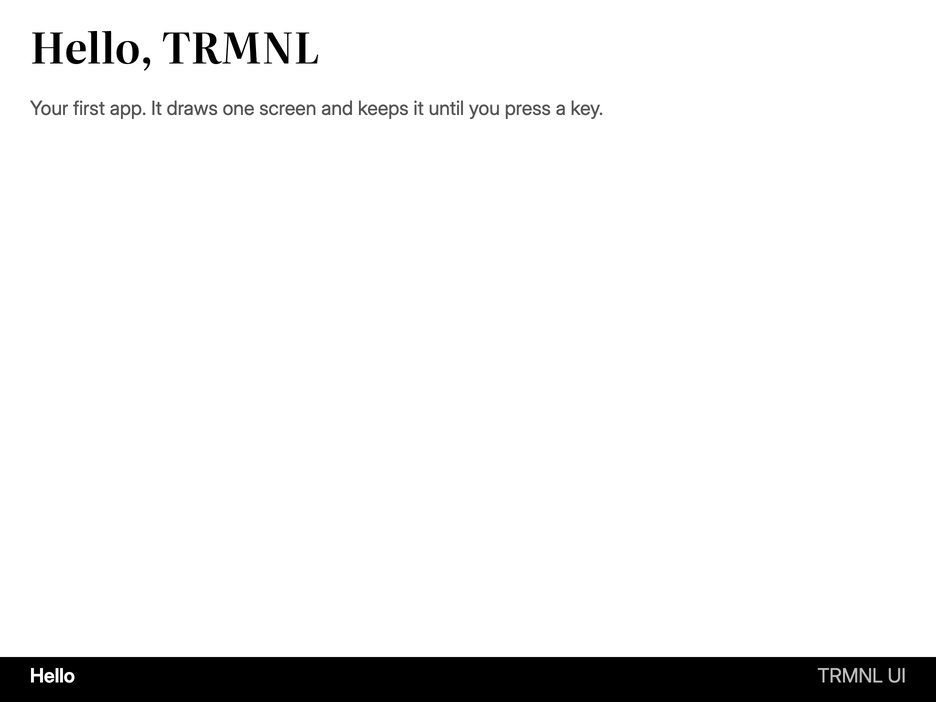

Overview
TRMNL UI is the only way an app shows something. You describe the screen with components in body(); the firmware renders it natively in the TRMNL design. There are no coordinates, fonts or refresh modes to choose.
A TRMNL sleeps between presses, so every press starts your app from zero. TRMNL UI hides that: values you keep in a State are restored before each press, the view that has the focus handles the press, and the screen is drawn again from body().
// Name: Hello import { App, View, Layout, Title, Description, TitleBar, register } from "./trmnl-ui"; export { trmnl_event } from "./trmnl-ui"; class Hello extends App { body(): View { return Layout([ Title("Hello, TRMNL"), Description("Your first app. It draws one screen and keeps it until you press a key."), TitleBar("Hello", "TRMNL UI"), ]); } } register(new Hello());


The same app on both devices. Sizes are in points, so the layout scales.
Components are named after the TRMNL plugin framework: a Layout(_:) with a Title(_:), a Value(_:_:), a List(_:_:) of items and the black TitleBar(_:_:) at the bottom, so plugin authors recognize them at once. The library grows with new monochrome components; see All components.
Topics
Essentials
Write an app, build it to WebAssembly, and run it on a simulated TRMNL.
AppThe base class of a TRMNL UI app.
body()Returns the screen to show now.
register(_:)Tells the framework which app to run.
preview()Mock data for the Developer tab, like a SwiftUI preview.
Choices the user fills in, like a plugin's custom fields.
State
StateAn integer that survives every wake.
state(_:_:)Creates a State stored under a key.
Layout
Layout(_:)Stacks views from top to bottom with the TRMNL margins.
Row(_:)Places views side by side in equal widths.
Spacer()Empty space that takes what the other views leave.
Divider()A thin line between groups of views.
Text
Title(_:)The heading of a screen.
Description(_:)Up to two lines of secondary text.
Data
Value(_:_:)A big number or short value with a label, like the TRMNL framework's value.
ProgressBar(_:_:)How far along something is.
Heatmap(_:_:_:_:)A grid of square cells, each as dark as its day got.
Lists and reading
List(_:_:)Rows of items with one focused row.
Reader(_:_:)Paged text that fills the screen.
Bars
TitleBar(_:_:)The black bar at the bottom of every TRMNL plugin.
All components
Every TRMNL UI component on one screen, and the ones that come next.
The app sends a tree of components; the firmware draws it.
Input and screen updates
How Next, Prev and Select reach your views on a touchbar and on a single button.
When the e-paper does a full refresh and when a fast partial one.
Playlist
glance()The screen the playlist shows for your app.
How an app sits among plugins, opens on Select and returns on Hold.
Devices
How one app looks right on a 1872 × 1404 grayscale X and an 800 × 480 black-and-white OG.